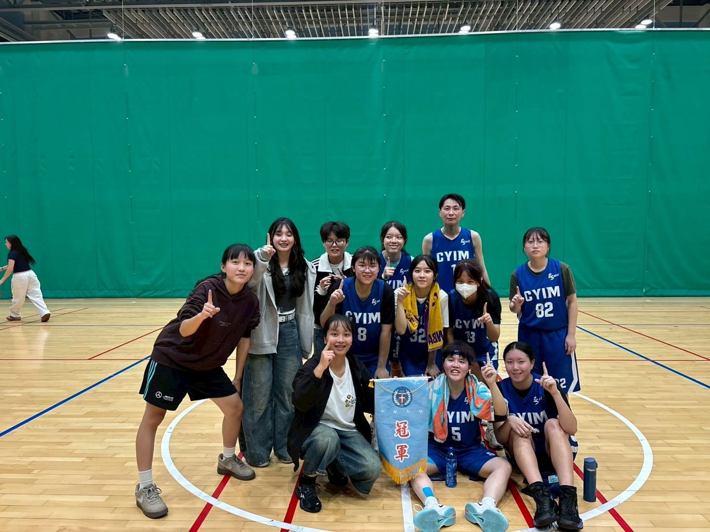
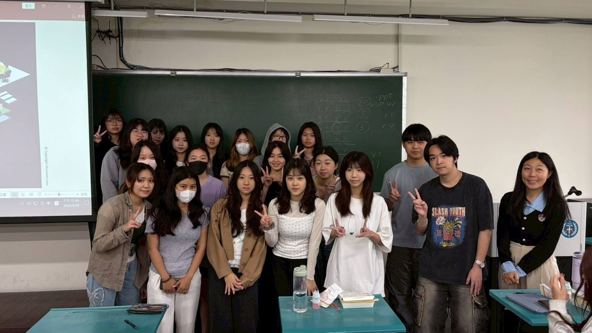
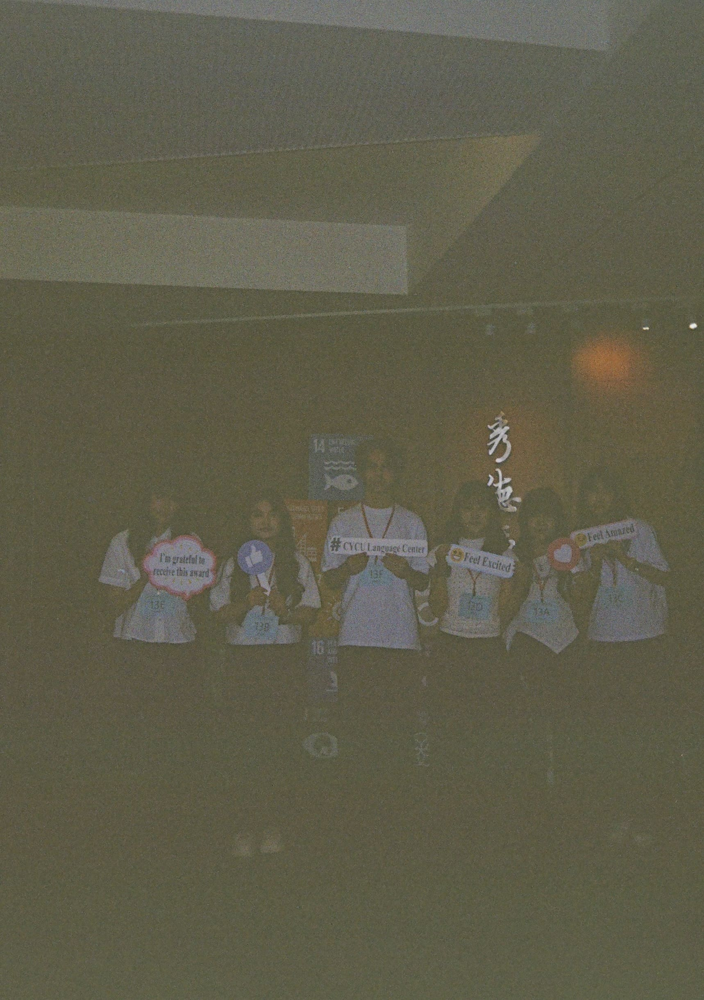

核心專業與語言
HTML / CSS / JS (85%)
Java 物件導向程式設計 (75%)
Python 資料處理 (80%)
SLOGAN： Do something today that your future self will thank you for.
就讀校系： 中原大學資訊管理學系
自我介紹： 我目前就讀大學二年級，喜歡拍照、嘗試新鮮事物，個性細心隨和，未來請多指教!
在大一參加了資管系女籃，透過每個禮拜二練習以及跟其他系友誼賽，最後獲得了新生盃的冠軍，謝謝學姐們幫我們找場地及對手，讓我們能安心練習，也因為是自己努力拿到的獎項，所以格外開心。

我們專案主題是到小松樹流浪之家幫忙愛心媽媽照顧流浪貓們，透過實際到訪看到有十幾隻貓咪，全由一位愛心媽媽以及兩位志工幫忙，明白他們的辛勞及善心，所以我們希望藉由社群媒體的力量讓更多人看見。

在大一下的英文課程上，我們這組被老師半推半就地參加了這個比賽，但我們在報名後，幾乎每個禮拜都會抽空來練習，互相檢討哪邊能更好、如何控制在六分鐘內講完報告內容，即使最後沒有得名，但我嘗試參加我沒想過會報名的比賽，我已經覺得大家都很棒了！(圖片因為是用底片相機拍的，所以比較不清楚。)
